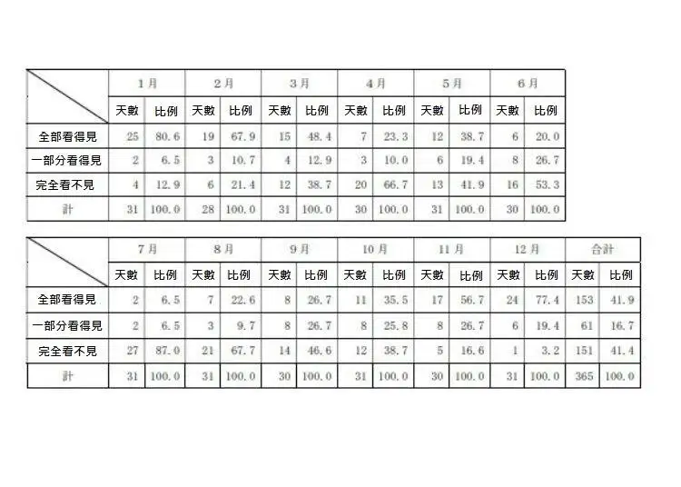

逆富士
前言
在說如何看到逆富士之前，必定要跟大家說觀看富士山的最佳季節，若你連最基本的富士山都看不到何來逆富士之說呢？
看到富士山-季節篇
首先，看富士山就和看台灣阿里山一樣，是要挑季節去看的，山梨縣曾在2019年做過統計，整理一年中每月每日究竟有那些日子能清楚看到富士山，結果發現秋季至冬季是觀賞富士山的最佳時刻，

看到富士山-時間篇
所謂逆富士，就是說整座富士山倒影在平靜的湖面上，呈現出相反的富士山。要拍到逆富士，建議最佳的逆富士拍攝時間為清晨，且需要配合無雨、無雪、無風的日子才能拍得到。

但若稍微有些微風亦未嘗完全不能拍到逆富士，有可能你的逆富士就像一副油畫一樣，朦朦朧朧的。